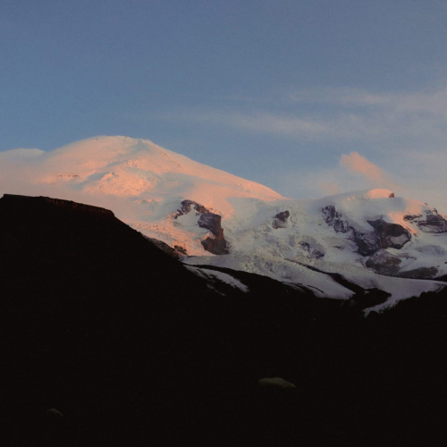

Популярные направления

Ергаки
Байкал
Эльбрус

Будьте "Выше гор" вместе с нами
Туризм — это способ активного отдыха, который тренирует физическую выносливость, укрепляет здоровье и
дарит
незабываемые впечатления, приближая человека к природе. Преодоление трудностей на маршруте учит
принимать
решения, работать в команде и преодолевать собственные границы.
Используй возможность расширить свои
горизонты — выбирай путешествия вместе с туристической командой Выше гор.
Отправляйте заявку и становитесь ближе к своей мечте.
После отправки данных наши менеджеры свяжутся
с вами и помогут выбрать подходящий маршрут.